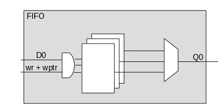
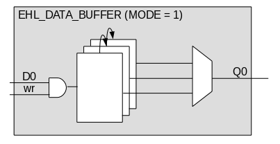
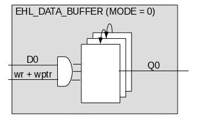

| Версия | 1.0 |
| Дата | 2017.04.01 |
| Разработчик | А.В. Корнюхин (kornukhin@mail.ru) |
При использовании FIFO для синхронизации потока данных внутри одного тактового домена могут возникать временные нарушения в пути данных, как на входах так и на выходах данных FIFO. В случае, когда массив для хранения данных реализован на триггерах (а не на библиотечных модулях статической памяти, что характерно для FIFO небольшого размера), путь данных можно несколько сократить.
Причиной временных нарушений служит наличие логики и большое разветвление сигналов данных внутри FIFO, а также наличие логики за его пределами. Хотя существует старая (и уже не требуемая) рекомендация к использованию регистровых данных на границе блоков, никто не ограничивает пользователя в выборе конструкций.
Типичная структура массива данных FIFO представлена на рис. 1. Как видно из рисунка, путь данных от входа D0 проходит через логику, содержащую сигнал разрешения записи и указатель на адрес массива. Путь данных до выхода Q0 формируется на мультиплексоре от всех элементов массива.
Рис. 1. Фрагмент структуры FIFO.
При наличии временных нарушений на одном из указанных путей, от логики в нем можно избавиться. Цена уменьшения задержки в пути – возросшая мощность.
При наличии критичного пути на входе FIFO следует выбрать режим записи в первый элемент массива со сдвигом всех уже имеющихся в нем данных (сдвиг делает невозможным реализацию массива на стандартной библиотечной блочной памяти). При этом чтение происходит по указателю, с сохранением логики на выходе (рис. 2). Во входном пути данных не используется указатель адреса, а логика подключается только к первому элементу массива.
Рис. 2. Буфер с уменьшенными входными задержками.
При наличии критичного пути на выходе FIFO следует выбрать режим чтения из первого элемента массива, с записью по указателю и сдвигом всего массива при чтении (рис. 3). При этом выходные данные всегда управляются напрямую с выхода первого элемента массива.
Рис. 3. Буфер с уменьшенными выходными задержками.
Следует иметь в виду, что поскольку в отличие от реализации FIFO требуется сдвигать весь массив при чтении/записи, то потребляемая мощность возрастает.
Описанные выше модификации не приводят к изменения окружающего FIFO кода, т.е. делается локальное изменение, имеющее эквивалентный функционал на границе FIFO.